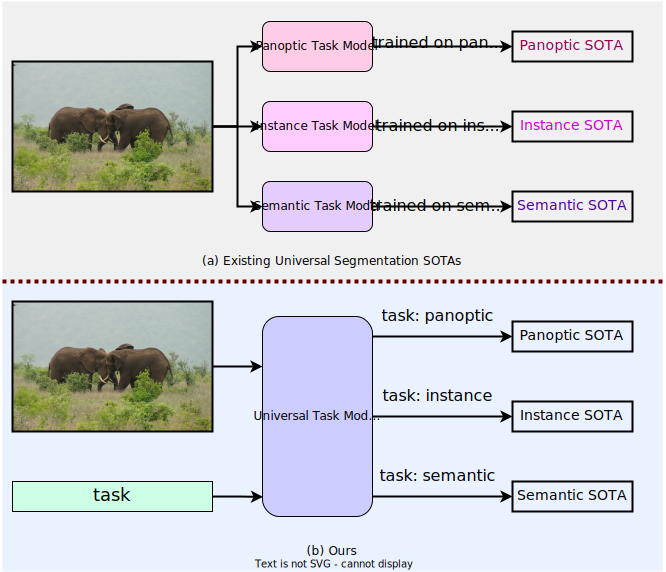

Abstract
image segmentation include scene parsing, panoptic segmentation, and, more recently, universal architectures. However, existing approaches are not truly unified, as they need to train three models individually on the panoptic, instance, and semantic segmentation to achieve the best performance. Ideally, a truly universal framework must only be trained once and achieve SOTA performance on all three image segmentation tasks. To that end, we propose our CQFormer framework, which unifies image segmentation with a multi-task train-once policy, and outperforms existing specialized models on all three tasks. We first propose a task-conditioned joint training strategy that enables training on ground truths of each domain (panoptic, instance, and semantic segmentation) within a single training process. Secondly, we propose using a paired query-text contrastive loss during training to establish better inter-class boundaries and inter-task distinction. Thirdly, we introduce a task-token input to make our model conditioned on the task at hand. Our experiments demonstrate the superior performance of our CQFormer compared to existing individually trained models on three benchmark datasets. Most notably, we achieve significant improvements with Swin-L over Mask2Former on the ADE20K (+0.9% mIoU), Cityscapes (+1.9% AP), and COCO (+0.5% PQ) datasets.